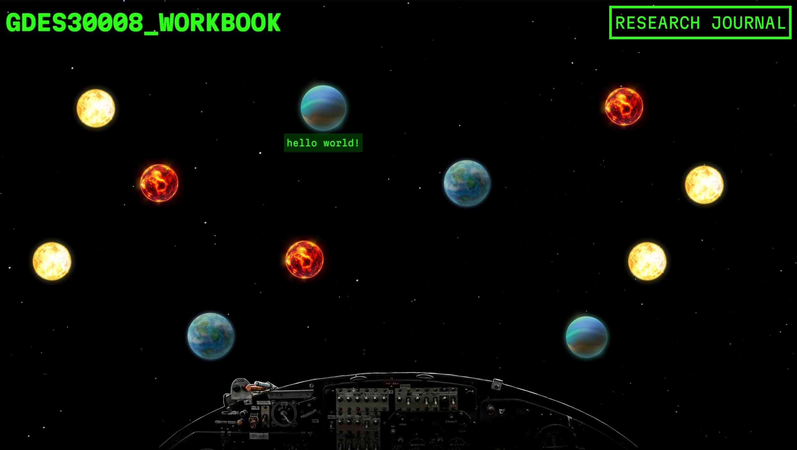

make it bling!
Following on from my concept of a space-themed shooter, I began styling my page to fit the aesthetics that I had in mind. The background would be the area of space that users were looking outwards at. I decided on monospace and sans serif fonts to add to the futuristic look of the site, and used light colours to contrast with the background. The rest of the site components would slowly be implemented.

I continued refining my site, replacing my placeholder images and adding assets that would fit the sci-fi aesthetic. I also implemented some rudimentary animation for the site, including a glowing effect on header text (to mimic a digital display) and tooltips that appear when each target is hovered over that show the title of the destination page.
For some of my shorter workbook entries, I used a two-column layout to minimize space. In order to make reading it more intuitive, I aligned the contents of the right column to the right to distinguish it from the left column. I decided against using this for longer entries, as the reader would have to scroll back and forth in order to read all the content. I am pleased with the implementation of this layout, and will likely use it for my research journal as well.

PREV HOME NEXT